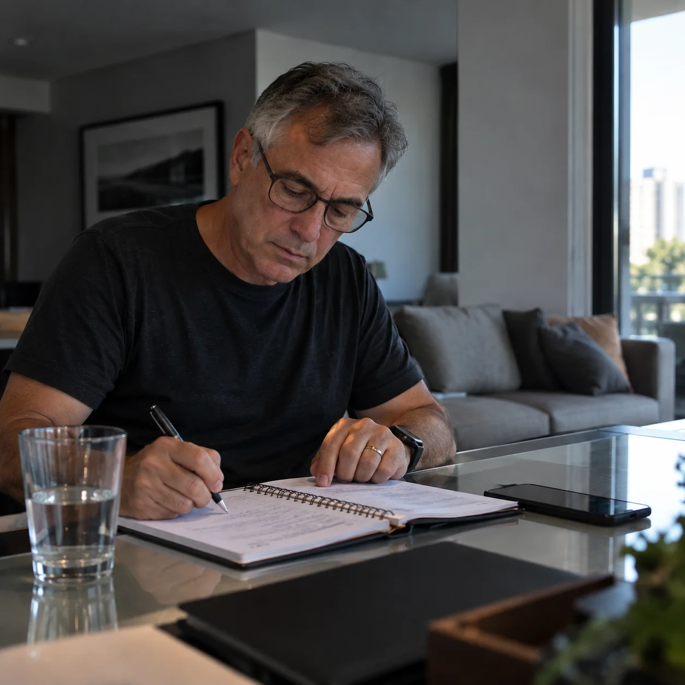
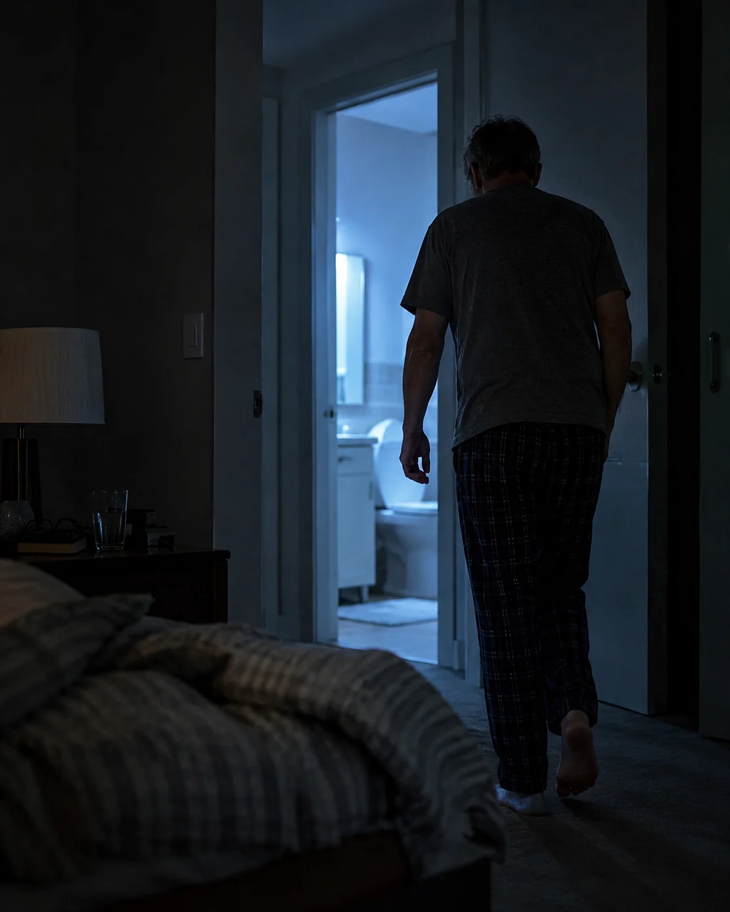
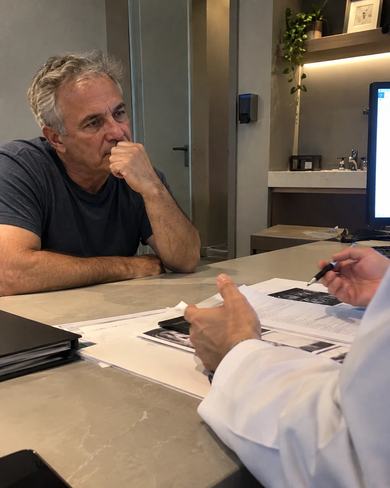
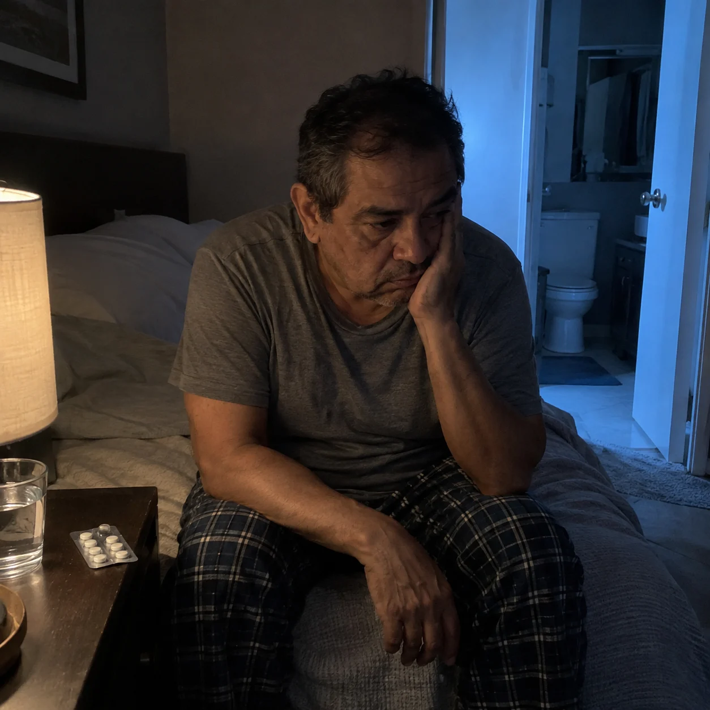

Em alguns casos, o acompanhamento pode ser suficiente.
Talvez você tenha começado a dormir pior, esteja passando mais tempo no banheiro ou simplesmente tenha se acostumado com mudanças que antes não faziam parte da sua rotina.
Você possui algum dos sintomas abaixo?
Talvez seja a hora de procurar ajuda médica. O próximo passo é procurar um urologista e entender o que pode estar por trás desses sintomas.
Clique no botão abaixo que agende sua consulta
Sua principal área de atuação são as doenças da próstata, incluindo a Hiperplasia Prostática Benigna e o câncer de próstata.
Também atua com cálculos urinários e tumores urológicos.
No tratamento da próstata aumentada, trabalha com HoLEP, técnica realizada com laser.
Também atua com cirurgia robótica no tratamento de tumores urológicos, além de procedimentos endourológicos e cirurgias a laser.
Muitos homens começam a perceber que o jato urinário já não tem a mesma força de antes, demoram mais para começar a urinar, precisam ir ao banheiro com mais frequência ou passam a acordar várias vezes durante a noite.
Muitas vezes essas mudanças aparecem aos poucos e acabam parecendo normais.
O homem se acostuma a levantar durante a madrugada, passa a esperar mais tempo no banheiro e muda alguns hábitos para tentar conviver com aquilo.

Uma das possibilidades por trás desses sintomas é o aumento benigno da próstata, chamado de Hiperplasia Prostática Benigna.
Apesar do nome parecer mais técnico, a ideia é simples: em alguns homens, a próstata aumenta com o passar do tempo e isso pode começar a interferir na forma como a urina passa.
É aí que podem aparecer mudanças como jato mais fraco, dificuldade para começar a urinar ou necessidade de ir ao banheiro com mais frequência.
Mas isso não significa que todo homem com esses sintomas tenha próstata aumentada ou precise de algum procedimento.

Na consulta, o Dr. Cassiano avalia quando os sintomas começaram, se estão piorando, se já houve uso de algum medicamento, quais exames foram realizados e o quanto essas mudanças estão interferindo na rotina.
Essas informações ajudam a entender o que está acontecendo e qual deve ser o próximo passo.
Agendar avaliaçãoNem todo homem com próstata aumentada precisa do mesmo tratamento.

Em alguns casos, o acompanhamento pode ser suficiente.
Em outros, pode haver indicação de medicamentos.

E existem situações em que, mesmo com o tratamento inicial, os sintomas continuam atrapalhando o sono e a rotina. Quando isso acontece, pode ser necessário avaliar outras possibilidades.
O HoLEP é uma técnica realizada com laser que permite tratar o tecido da próstata responsável por dificultar a passagem da urina.
Na prática, o objetivo é desobstruir essa passagem e tratar a causa mecânica dos sintomas urinários quando o aumento da próstata é o problema e existe indicação para esse tipo de abordagem.
A técnica pode ser utilizada inclusive em próstatas de maior volume.
Mas a indicação não depende apenas do tamanho da próstata.
É preciso considerar
Só depois dessa avaliação faz sentido discutir se o HoLEP é uma opção para aquele caso.
Deslize para o lado e confira alguns relatos sobre a experiência durante o atendimento.
Se o jato ficou mais fraco, se está mais difícil urinar, se você passou a acordar várias vezes durante a noite ou se os sintomas continuam mesmo depois de um tratamento, vale olhar para isso com mais atenção.
Você não precisa decidir sozinho qual tratamento precisa.
O próximo passo é fazer uma avaliação e entender qual caminho faz sentido para o seu caso.